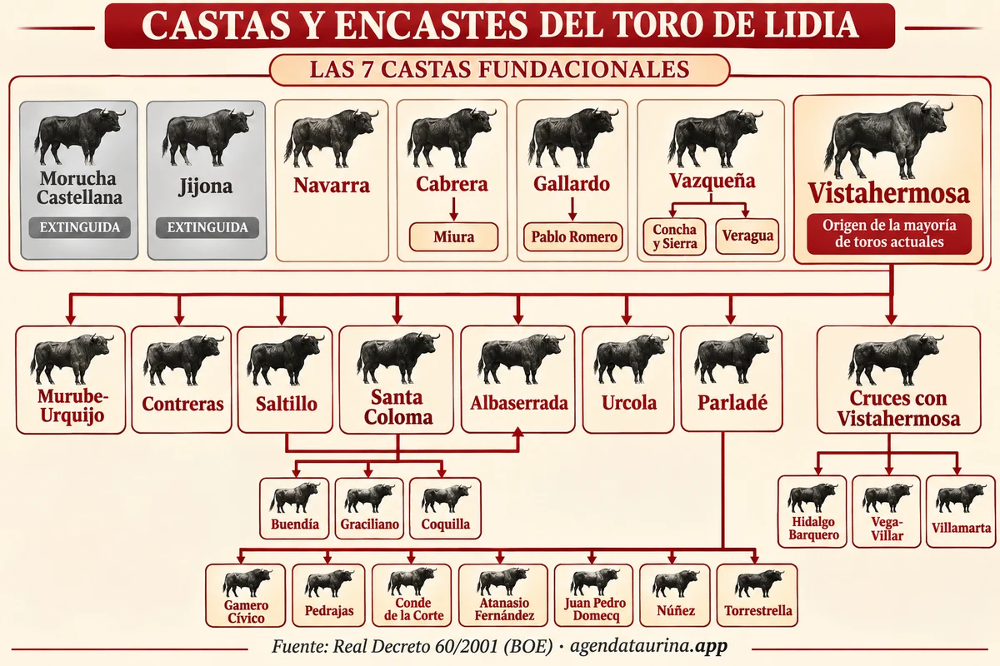

Agenda Taurina
Agenda TaurinaCastas y encastes del toro de lidia: de dónde viene cada toro, según el prototipo racial oficial
Qué es una casta, qué es un encaste y cómo se reconoce cada uno, según la descripción oficial del BOE

Ilustración de Agenda Taurina generada con IA · Fuente: Real Decreto 60/2001 (BOE).
Cuando se habla de un toro de Santa Coloma, de un Albaserrada o de un Domecq, no se habla de la ganadería concreta, sino de su encaste: la familia de la que viene. Esta guía explica cómo se organiza la raza de lidia, siguiendo el prototipo racial oficial que fija el Real Decreto 60/2001.
Casta, encaste, línea y ganadería
- Casta: el tronco del que viene todo; las vacadas de origen de la raza.
- Encaste: la rama de una casta que un ganadero seleccionó durante generaciones hasta darle un tipo propio. Suele llevar su nombre: Murube, Santa Coloma, Núñez…
- Línea: una variante dentro de un encaste.
- Ganadería: el hierro que cría hoy los toros, que puede tener uno o varios encastes.
Las castas fundacionales
Según el catálogo oficial de razas del Ministerio de Agricultura, la raza de lidia nace del ganado autóctono de la península entre los siglos XVI y XVIII. Las castas fundacionales son siete: Morucha Castellana, Jijona-Toros de la Tierra, Navarra, Cabrera, Gallardo, Vistahermosa y Vazqueña. La Jijona y la Morucha Castellana se consideran extinguidas.
Cómo es cada una, según el prototipo oficial
- Cabrera (encaste Miura): toros altos, de patas y cuello largos, perfil subcóncavo y cuernos gruesos en la base. Capas variadas: negra, cárdena, castaña y colorada.
- Gallardo (encaste Pablo Romero): cabeza corta, muchas veces chata, y cuerna media. Sobre todo cárdenos y negros.
- Navarra: toros cortos y muy carifoscos, de ojos saltones y cuernos acaramelados que apuntan hacia arriba. Colorados y castaños.
- Vazqueña: la casta con más variedad de capas de toda la raza. De ella salen las líneas Concha y Sierra (más cuerna) y Veragua (cuernos más cortos y ganchudos).
- Vistahermosa: la casta de la que viene la mayoría de la cabaña actual. Sus encastes se explican a continuación.
Los encastes de Vistahermosa
- Murube-Urquijo: toros grandes, de cabeza grande y carifoscos. Casi siempre negros.
- Contreras: bajos y cortos de cuerpo. Negros, colorados y castaños, muchas veces salpicados.
- Saltillo: cara larga, hocico afilado y cuernos cortos hacia delante. Cárdenos y negros, a menudo entrepelados.
- Santa Coloma: toros finos y de ojos saltones, cárdenos y negros. Tiene tres líneas: Buendía (la más extendida), Graciliano (más hueso y cuerna, sobre todo negros) y Coquilla (la más fina, negros y tostados).
- Albaserrada: viene de Saltillo y Santa Coloma. Cabeza estrecha y larga, más tamaño que su origen y cuernas más ofensivas. Cárdenos y negros.
- Urcola: cuernos abiertos y morrillo destacado. Negros, colorados y castaños, con capas melocotón y particularidades como el listón y el chorreado.
- Los que vienen de Parladé: Gamero Cívico, Pedrajas, Conde de la Corte, Atanasio Fernández, Juan Pedro Domecq, Núñez y Torrestrella. El BOE explica que evolucionaron por separado, así que no hay un único «tipo Parladé».
- Cruces con Vistahermosa: Hidalgo Barquero (berrendos), Vega-Villar (mucha variedad de capas y pintas blancas) y Villamarta.
Y en la calle
En los toros que anunciamos en la agenda damos siempre la ganadería, y de ella se saca el encaste. Las capas y las particularidades que nombra el prototipo están explicadas en nuestras guías de capas o pelajes y de particularidades. Y si quieres saber de dónde sale el toro que se prueba en la calle, mira qué es un toro cerril.
Fuente: Real Decreto 60/2001, de 26 de enero, sobre prototipo racial de la raza bovina de lidia (BOE), y catálogo oficial de razas del Ministerio de Agricultura, Pesca y Alimentación, explicados por Agenda Taurina.
Ver el calendario completo Ver todas las noticias